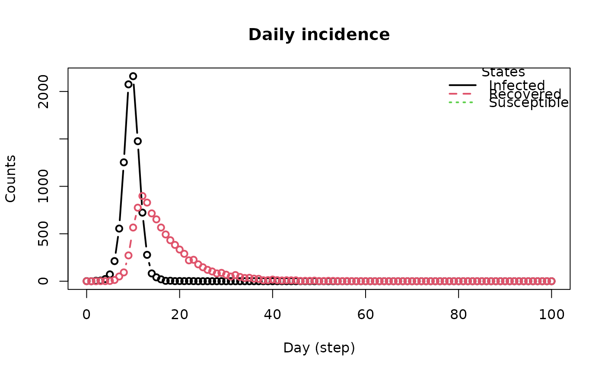

Susceptible Infected Removed model (SIR) with mixing
Usage
ModelSIRMixing(
name,
n,
prevalence,
contact_rate,
transmission_rate,
recovery_rate,
contact_matrix
)Arguments
- name
String. Name of the virus
- n
Number of individuals in the population.
- prevalence
Double. Initial proportion of individuals with the virus.
- contact_rate
Numeric scalar. Average number of contacts per step.
- transmission_rate
Numeric scalar between 0 and 1. Probability of transmission.
- recovery_rate
Numeric scalar between 0 and 1. Probability of recovery.
- contact_matrix
Matrix of contact rates between individuals.
Value
The
ModelSIRMixingfunction returns a model of class epiworld_model.
Details
The contact_matrix is a matrix of contact rates between entities. The
matrix should be of size n x n, where n is the number of entities.
This is a row-stochastic matrix, i.e., the sum of each row should be 1.
The initial_states function allows the user to set the initial state of the model. In particular, the user can specify how many of the non-infected agents have been removed at the beginning of the simulation.
See also
epiworld-methods
Other Models:
ModelDiffNet(),
ModelMeaslesMixing(),
ModelMeaslesMixingRiskQuarantine(),
ModelMeaslesSchool(),
ModelSEIR(),
ModelSEIRCONN(),
ModelSEIRD(),
ModelSEIRDCONN(),
ModelSEIRMixing(),
ModelSEIRMixingQuarantine(),
ModelSIR(),
ModelSIRCONN(),
ModelSIRD(),
ModelSIRDCONN(),
ModelSIRLogit(),
ModelSIS(),
ModelSISD(),
ModelSURV(),
epiworld-data
Examples
# From the vignette
# Start off creating three entities.
# Individuals will be distribured randomly between the three.
e1 <- entity("Population 1", 3e3, as_proportion = FALSE)
e2 <- entity("Population 2", 3e3, as_proportion = FALSE)
e3 <- entity("Population 3", 3e3, as_proportion = FALSE)
# Row-stochastic matrix (rowsums 1)
cmatrix <- c(
c(0.9, 0.05, 0.05),
c(0.1, 0.8, 0.1),
c(0.1, 0.2, 0.7)
) |> matrix(byrow = TRUE, nrow = 3)
N <- 9e3
flu_model <- ModelSIRMixing(
name = "Flu",
n = N,
prevalence = 1 / N,
contact_rate = 20,
transmission_rate = 0.1,
recovery_rate = 1 / 7,
contact_matrix = cmatrix
)
# Adding the entities to the model
flu_model |>
add_entity(e1) |>
add_entity(e2) |>
add_entity(e3)
set.seed(331)
run(flu_model, ndays = 100)
#> _________________________________________________________________________
#> Running the model...
#> ||||||||||||||||||||||||||||||||||||||||||||||||||||||||||||||||||||||||| done.
summary(flu_model)
#> ________________________________________________________________________________
#> ________________________________________________________________________________
#> SIMULATION STUDY
#>
#> Name of the model : Susceptible-Infected-Removed (SIR) with Mixing
#> Population size : 9000
#> Agents' data : (none)
#> Number of entities : 3
#> Days (duration) : 100 (of 100)
#> Number of viruses : 1
#> Last run elapsed t : 37.00ms
#> Last run speed : 23.71 million agents x day / second
#> Rewiring : off
#>
#> Global events:
#> - Update infected individuals (runs daily)
#>
#> Virus(es):
#> - Flu
#>
#> Tool(s):
#> (none)
#>
#> Model parameters:
#> - Contact rate : 20.0000
#> - Prob. Recovery : 0.1429
#> - Prob. Transmission : 0.1000
#>
#> Distribution of the population at time 100:
#> - (0) Susceptible : 8999 -> 0
#> - (1) Infected : 1 -> 0
#> - (2) Recovered : 0 -> 9000
#>
#> Transition Probabilities:
#> - Susceptible 0.91 0.09 -
#> - Infected - 0.86 0.14
#> - Recovered - - 1.00
#>
plot_incidence(flu_model)
